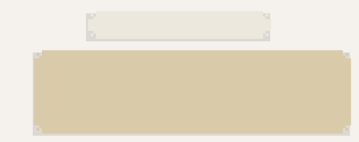

15:00, 22 de junio de 1930
FEDE
Le dije a tu vieja que te iba a mostrar lo que traje de Bella Unión y dice que no vuelvas tarde para la cena
Así que le avisé que íbamos a estudiar y que comías acá, y que si se hacía muy tarde te quedabas a dormir.
Todo okis
18:30, 22 de junio de 1930
JAVI
Gracias! Te la debo
A Federica parece no habérsele ocurrido que en 1930 no solo no existen los celulares, sino que tampoco hay teléfonos en las casas.
Si estuviera acá, notaría las diferencias, de todo tipo.
Empezando por la vestimenta.
Ni qué hablar de todo el resto.
Algún día escribirá sobre este viaje.
Le manda otro mensaje.

18:31, 22 de junio de 2030
JAVI
Con nosotros viaja la famosa Josephine Baker, que quiere ir a Montevideo.
Como el otro día hablaste de ella me acordé de ti.
Le puedo pedir un autógrafo.
Jajaja.